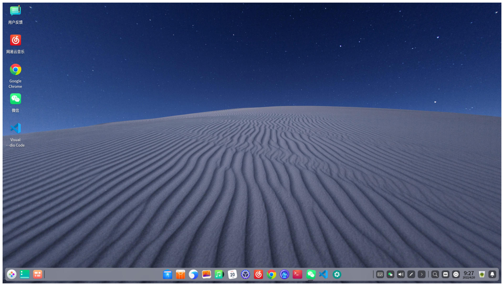
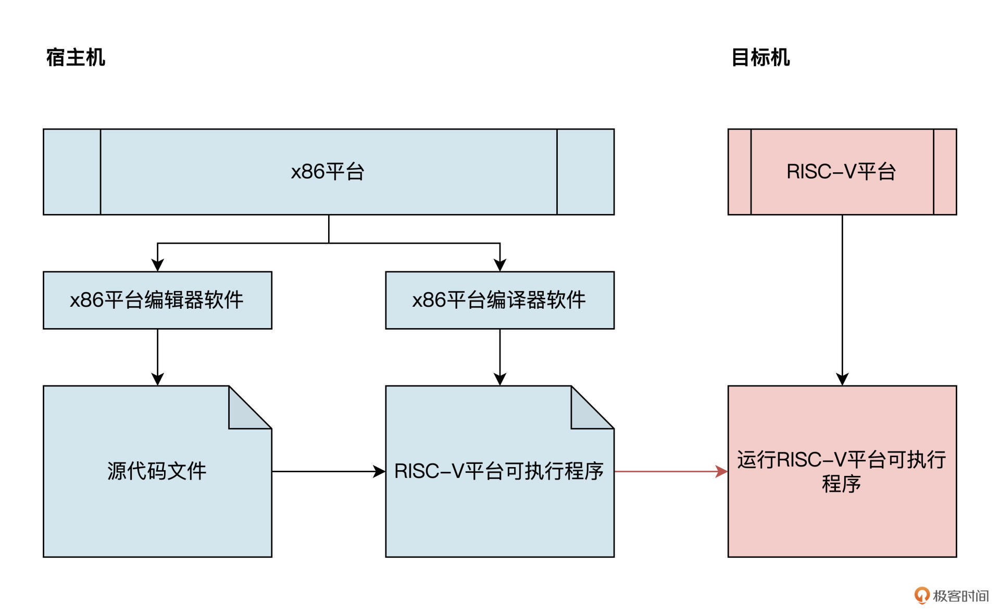
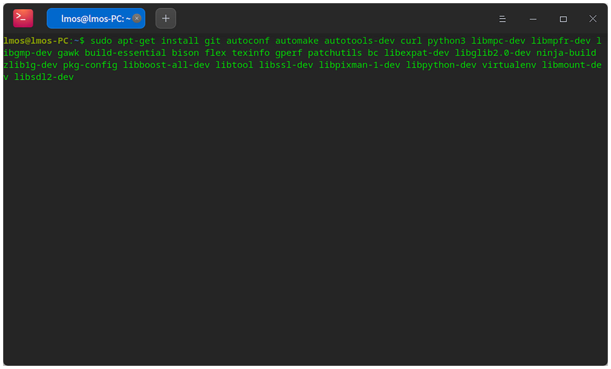
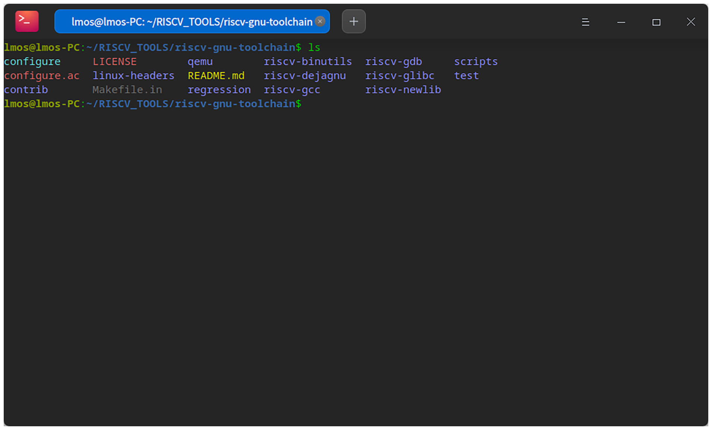
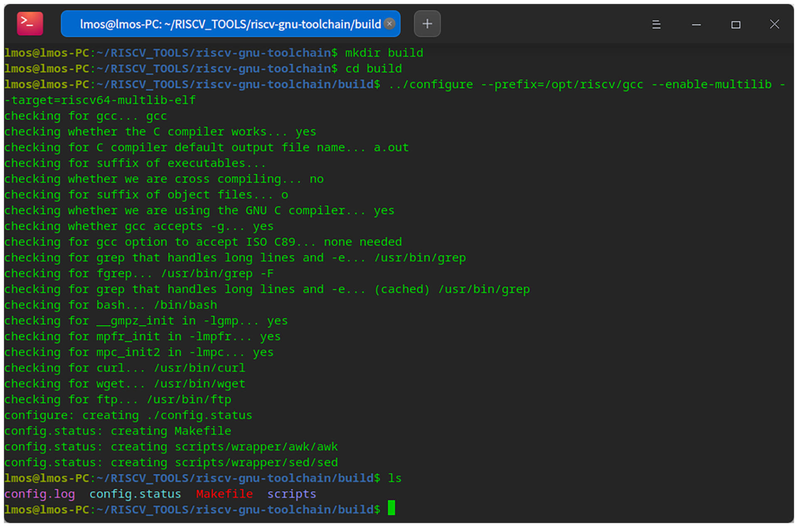
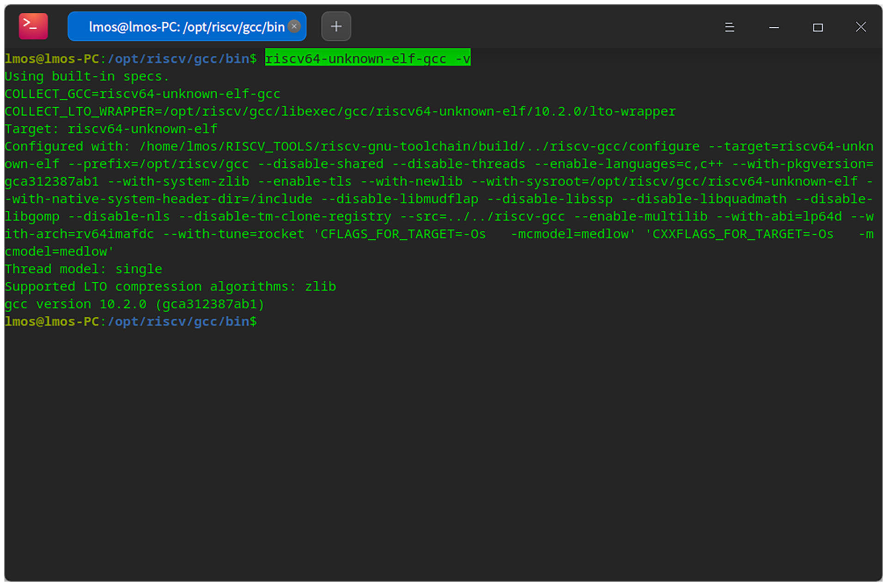

- 00 开篇词 练好基本功，优秀工程师成长第一步.md.html
- 01 CISC & RISC：从何而来，何至于此.md.html
- 02 RISC特性与发展：RISC-V凭什么成为“半导体行业的Linux”？.md.html
- 03 硬件语言筑基（一）：从硬件语言开启手写CPU之旅.md.html
- 04 硬件语言筑基（二）_ 代码是怎么生成具体电路的？.md.html
- 05 指令架构：RISC-V在CPU设计上到底有哪些优势？.md.html
- 06 手写CPU（一）：迷你CPU架构设计与取指令实现.md.html
- 07 手写CPU（二）：如何实现指令译码模块？.md.html
- 08 手写CPU（三）：如何实现指令执行模块？.md.html
- 09 手写CPU（四）：如何实现CPU流水线的访存阶段？.md.html
- 10 手写CPU（五）：CPU流水线的写回模块如何实现？.md.html
- 11 手写CPU（六）：如何让我们的CPU跑起来？.md.html
- 12 QEMU：支持RISC-V的QEMU如何构建？.md.html
- 13 小试牛刀：跑通RISC-V平台的Hello World程序.md.html
- 14 走进C语言：高级语言怎样抽象执行逻辑？.md.html
- 15 C与汇编：揭秘C语言编译器的“搬砖”日常.md.html
- 16 RISC-V指令精讲（一）：算术指令实现与调试.md.html
- 17 RISC-V指令精讲（二）：算术指令实现与调试.md.html
- 18 RISC-V指令精讲（三）：跳转指令实现与调试.md.html
- 19 RISC-V指令精讲（四）：跳转指令实现与调试.md.html
- 20 RISC-V指令精讲（五）：原子指令实现与调试.md.html
- 21 RISC-V指令精讲（六）：加载指令实现与调试.md.html
- 22 RISC-V指令精讲（七）：访存指令实现与调试.md.html
- 23 内存地址空间：程序中地址的三种产生方式.md.html
- 24 虚实结合：虚拟内存和物理内存.md.html
- 25 堆&栈：堆与栈的区别和应用.md.html
- 26 延迟分配：提高内存利用率的三种机制.md.html
- 27 应用内存管理：Linux的应用与内存管理.md.html
- 28 进程调度：应用为什么能并行执行？.md.html
- 29 应用间通信（一）：详解Linux进程IPC.md.html
- 30 应用间通信（二）：详解Linux进程IPC.md.html
- 31 外设通信：IO Cache与IO调度.md.html
- 32 IO管理：Linux如何管理多个外设？.md.html
- 33 lotop与lostat命令：聊聊命令背后的故事与工作原理.md.html
- 34 文件仓库：初识文件与文件系统.md.html
- 35 Linux文件系统（一）：Linux如何存放文件？.md.html
- 36 Linux文件系统（二）：Linux如何存放文件？.md.html
- 37 浏览器原理（一）：浏览器为什么要用多进程模型？.md.html
- 38 浏览器原理（二）：浏览器进程通信与网络渲染详解.md.html
- 39 源码解读：V8 执行 JS 代码的全过程.md.html
- 40 内功心法（一）：内核和后端通用的设计思想有哪些？.md.html
- 41 内功心法（二）：内核和后端通用的设计思想有哪些？.md.html
- 42 性能调优：性能调优工具eBPF和调优方法.md.html
- 先睹为快：迷你CPU项目效果演示.md.html
- 加餐01 云计算基础：自己动手搭建一款IAAS虚拟化平台.md.html
- 加餐02 学习攻略（一）：大数据&云计算，究竟怎么学？.md.html
- 加餐03 学习攻略（二）：大数据&云计算，究竟怎么学？.md.html
- 加餐04 谈谈容器云与和CaaS平台.md.html
- 加餐05 分布式微服务与智能SaaS.md.html
- 国庆策划01 知识挑战赛：检验一下学习成果吧！.md.html
- 国庆策划02 来自课代表的学习锦囊.md.html
- 国庆策划03 揭秘代码优化操作和栈保护机制.md.html
- 温故知新 思考题参考答案（一）.md.html
- 用户故事 我是怎样学习Verilog的？.md.html
- 结束语 心若有所向往，何惧道阻且长.md.html
- 捐赠
12 QEMU：支持RISC-V的QEMU如何构建？
你好，我是LMOS。
工欲善其事，必先利其器。作为开发者，学习过程中我们尤其要重视动手实践，不断巩固和验证自己学到的知识点。而动手实践的前提，就是要建立一个开发环境，这个环境具体包括编译环境、执行环境，以及各种常用的工具软件。
我会用两节课带你动手搭好环境，今天这节课咱们先热个身，搞清楚什么是主环境，还有怎么基于它生成交叉编译工具。
代码你可以从这里下载。
主环境
主环境，有时也叫作HOST环境，也就是我们使用的计算机环境，即使用什么样的操作系统、什么架构的计算机作为开发环境。
比方说我们经常用PC机作为开发机使用，它实际就是一个基于x86架构（或其他架构）的硬件平台，再加上Windows或者Linux等操作系统共同组成的开发环境。
普通用户的电脑上经常安装的操作系统是Windows，因为界面友好方便、操作简单且娱乐影音、游戏办公等应用软件也是不胜枚举。
Windows对普通用户来说的确非常友好。但是作为软件开发者，对于志存高远、想要精研技术的我们而言，更喜欢用的是Linux系统。
它虽然没有漂亮的GUI，却暴露了更多的计算机底层接口，也生产了更多的开发工具和各种各样的工具软件。比如大名鼎鼎的编译器GCC、声名远扬的编辑器EMACS、VIM，还有自动化的脚本工具shell、make等。这些工具对开发者非常友好，配合使用可以让我们的工作事半功倍，后面你会逐渐体会到这点。
当然Linux只是一个内核，我们不能直接使用，还需要各种工具、库和桌面GUI，把这些和Linux打包在一起发行，这就构成了我们常说的Linux发行版。
我最喜欢的Linux发行版是Deepin和Ubuntu。为了统一，我建议你使用Deepin最新版，你也可以使用Ubuntu，它们是差不多的。只是操作界面稍有不同。我先给你展示下我的Deepin，如下图，刚装上它的时候，我就觉得它颇为惊艳。

这里最基础的安装我就不讲了，因为安装Deepin十分简单，无论是虚拟机还是在物理机上安装，我相信你通过互联网都可以自行解决，搞不定也可以看看这里。
这两种方式我也替你对比过，虚拟机中的Linux较物理机上的Linux性能稍差一点，但并不影响我们实验操作和结果。
为什么需要交叉编译
虽然主环境搞定了，但现在我们还不能直接跑代码。为什么呢？
先回想一下，平时我们正常开发软件需要什么？我猜，哪怕你不能抢答，也会知道个大概：需要电脑（PC）、特定的操作系统（比如Windows或Linux等），在这个操作系统上还能运行相应的编辑器和编译器。编辑器用来编写源代码，而编译器用来把源代码编译成可执行程序。
似乎不需要更多东西了，毕竟我们日常开发的软件，宿主平台和目标平台是相同的。如果我们把限制条件变一变，情况就不同了。如果我们想尝试在RISC-V平台上跑程序，要怎么办呢？
你或许会说，这简单，买一台RISC-V的机器不就行了。可是先不说购买硬件的经济成本，实际上，很多RISC-V平台硬件资源（如内存、SD卡容量）有限，不足以运行复杂的编译器软件，有的甚至没有操作系统，更别说在上面运行编译器或者编辑器软件了。
面对这样的困境，就要用到交叉编译了。什么是交叉编译呢？简单来说，就是在一个硬件平台上，生成另一个硬件平台的可执行程序。
举个例子，我们在x86平台上编译生成ARM平台的可执行程序；再比如说，之后的课里我们将在x86平台上，生成RISC-V的可执行程序。这些都属于交叉编译，在这个过程中编译生成可执行程序的平台，称为宿主机或者主机；执行特定程序的平台（如ARM或者RISC-V平台），称为目标机。
我特意准备了图解，为你展示在x86平台上，交叉编译生成RISC-V平台可执行程序的过程，你可以仔细看看：

如何构建RISC-V交叉编译器
前面说了交叉编译的本质就是生成其他平台体系上的可执行程序，这个体系又不同于我们宿主平台。我们的目的很简单，就是要在x86平台上编写源代码，然后编译出RISC-V平台的可执行程序，最后放在RISC-V平台上去运行。
因此，我们需要用宿主机编译器A，编译出一个编译器B，这个编译器B是本地平台上的可执行程序。
说得再具体点，你可以把编译器B看作是 x86 Linux上的一个应用。但它的特殊之处就是，能根据源代码生成RISC-V平台上的可执行程序。补充一句，这里的编译器A和B都是C语言编译器。
下面我们开始构造编译器B。编译器B不仅仅是C语言编译器，还有很多额外的程序。比如RISC-V平台上使用的二进制文件分析（objcopy）、反汇编（objdump）、elf结构分析工具（readelf）、静态库归档（ar）、汇编器（as）、链接器（ld）、GDB、C语言库（Newlib、Glib、Multlib）等。
为了简单、便于区分，我们把这些对应于RISC-V平台的编译器相关的软件，统称为 RISC-V工具链。
构建RISC-V工具链的主要步骤如下：
- 安装依赖工具：在宿主平台上安装编译器A，以及相应的工具和库。-
- 下载RISC-V工具链的源代码；-
- 配置RISC-V工具链；-
- 编译RISC-V工具链，并安装在宿主平台上。
第一步：安装依赖工具
我们先从第一步开始，编译器A主要是宿主平台上的GCC，工具主要是Make、Git、Autoconf、Automake、CURL、Python3、Bison、Flex等。这里GCC主要在build-essential包中，我们只要在Linux终端中输入如下指令就可以了：
sudo apt-get install git autoconf automake autotools-dev curl python3 libmpc-dev libmpfr-dev libgmp-dev gawk build-essential bison flex texinfo gperf patchutils bc libexpat-dev libglib2.0-dev ninja-build zlib1g-dev pkg-config libboost-all-dev libtool libssl-dev libpixman-1-dev libpython-dev virtualenv libmount-dev libsdl2-dev

如果不出意外，这些工具和库会通过网络由Linux的apt包管理器，全自动地给你安装完毕。
第二步：下载工具链源代码
接着进入第二步下载RISC-V工具链源代码。通常来说，我们只要用Git克隆一个riscv-gnu-toolchain仓库即可，其它的由riscv-gnu-toolchain仓库中的仓库子模块自动处理。
手动配置环节
由于众所周知的网络原因，你可能连riscv-gnu-toolchain仓库都下载不下来，更别说自动下载仓库子模块了。为了照顾卡壳的人，我把手动处理的情况也顺便讲一下，能够直接自动安装的同学可以跳过这部分，直接翻到7条指令之后的最终截图对一下结果就行。
子模块如下：
riscv-qemu（虚拟机）
riscv-newlib (用嵌入式的轻量级C库)
riscv-binutils(包含一些二进制工具集合，如objcopy等)
riscv-gdb(用于调试代码的调试器)
riscv-dejagnu(用于测试其它程序的框架)
riscv-glibc(GNU的C库)
riscv-gcc (C语言编译器)
这些子模块我们需要手动从Gitee网站上下载。下载前，我们先在终端上输入后面的指令，建立一个目录，并切换到该目录中：
mkdir RISCV_TOOLS
cd RISCV_TOOLS
把RISC-V工具链的源代码手动下载好，步骤稍微多了一些，我在后面分步骤列出，方便你跟上节奏。
其实也就是7条指令的事儿，并不复杂。先统一说明下，后面这些命令都是切换到riscv-gnu-toolchain目录的终端下，输入我给你列出的指令即可。
- 开始下载riscv-gnu-toolchain，命令如下：
git clone https://gitee.com/mirrors/riscv-gnu-toolchain
cd riscv-gnu-toolchain
- 下载RISC-V平台的C语言编译器源代码仓库，输入如下指令：
git clone -b riscv-gcc-10.2.0 https://gitee.com/mirrors/riscv-gcc
- 下载测试框架源代码仓库，即riscv-dejagnu。输入如下指令：
git clone https://gitee.com/mirrors/riscv-dejagnu
- 下载GNU的C库源代码仓库，也就是riscv-glibc，输入如下指令：
git clone -b riscv-glibc-2.29 https://gitee.com/mirrors/riscv-glibc
- 下载用于嵌入式的轻量级C库源代码仓库，即riscv-newlib。输入如下指令：
git clone https://gitee.com/mirrors/riscv-newlib
- 下载二进制工具集合源代码仓库riscv-binutils，输入如下指令：
git clone -b riscv-binutils-2.35 https://gitee.com/mirrors/riscv-binutils-gdb riscv-binutils
- 最后，下载GDB软件调试器源代码仓库riscv-gdb，输入如下指令：
git clone -b fsf-gdb-10.1-with-sim https://gitee.com/mirrors/riscv-binutils-gdb riscv-gdb
好，现在所有的RISC-V工具链的源代码，我们已经下载完了。我们一起来同步一下，确保你我的riscv-gnu-toolchain目录下的目录和文件，完全一致。
在riscv-gnu-toolchain目录的终端下输入ls指令，你应该得到和后面这张图一样的结果。

第三步：配置工具链
在我们用宿主编译器编译所有的RISC-V工具链的源代码之前，还有最重要的一步，那就是配置RISC-V工具链的功能。
RISC-V工具链有很多配置选项，不同的配置操作会生成具有特定功能的RISC-V工具链。此外，配置操作还有一个功能，就是检查编译RISC-V工具链所依赖的工具和库。检查通过，就会生成相应的配置选项文件，还有用于编译操作的Makefile文件。
下面我们开始配置操作。为了不污染源代码目录，我们可以在riscv-gnu-toolchain目录下建立一个build目录，用于存放编译RISC-V工具链所产生的文件。还是在切换到riscv-gnu-toolchain目录的终端下，输入如下指令：
mkdir build #建立build目录
#配置操作，终端一定要切换到build目录下再执行如下指令
../configure --prefix=/opt/riscv/gcc --enable-multilib --target=riscv64-multlib-elf
我给你解释一下指令里的关键内容。
–prefix表示RISC-V的工具链的安装目录，我们一起约定为“/opt/riscv/gcc”这个目录。
–enable-multilib表示使用multlib库，使用该库编译出的RISC-V工具链，既可以生成RISCV32的可执行程序，也可以生成RISCV64的可执行程序，而默认的Newlib库则不行，它只能生成RISCV（32/64）其中之一的可执行程序。
–target表示生成的RISC-V工具链中，软件名称的前缀是riscv64-multlib-elf-xxxx。若配置操作执行成功了，build目录中会出现如下所示的文件：

第四步：编译工具链
最后我们来完成第四步，编译RISC-V工具链。只要配置操作成功了，就已经成功了90%。其实编译操作是简单且高度自动化的，我们只要在切换到build目录的终端下，输入如下指令即可：
sudo make -j8
这个指令在编译完成后会自动安装到“/opt/riscv/gcc”目录，由于要操作“/opt/riscv/gcc”目录需要超级管理员权限，所以我们要记得加上sudo。
另外，如果你的宿主机的CPU有n个核心，就在make 后面加-j（n*2），这样才能使用多线程加速编译。
好了，一通操作猛如虎，现在最重要的事情是等待计算机“搬砖”了。你不妨播放音乐，泡上一杯新鲜的热茶，一边听歌，一边喝茶……估计要喝很多杯茶，才会编译完成。最最重要的是这期间不能断电，否则几个小时就白费了。
如果终端中不出现任何错误，就说明编译成功了。我们在终端中切换到“/opt/riscv/gcc/bin”目录下，执行如下指令：
riscv64-unknown-elf-gcc -v
上述指令执行以后，会输出riscv64-unknown-elf-gcc的版本信息，这证明RISC-V工具链构建成功了。如下所示：

到这里，我们环境已经成功了一半，有了交叉编译器，并且这种交叉编译器能生成32位的RISC-V平台的可执行程序，也能生成64位的RISC-V平台的可执行程序。
你可能会好奇，成功了一半，那另一半呢？这需要我们接着干另一件事。什么事呢？容我先在这里卖个关子，下节课再揭秘。
重点回顾
通过这节课的学习，我们成功构建了RISC-V工具链，这样就能在X86平台上生成RISC-V平台的可执行程序了。下面让我们一起回顾一下，这节课中都做了些什么。
我们首先约定了宿主环境，需要用到Ubuntu或者Deepin的Linux发行版，无论你是将它们安装在物理PC上，还是安装在虚拟机上。
然后我们了解了什么是交叉编译。为了方便后面课程学习动手实践，我们要在x86平台的宿主机上编译生成RISC-V平台的可执行程序。
明确了目标，我们一起动手开始构建了一个RISC-V交叉编译器。你会发现其中不只是C/C++编译器，还有很多处理二进制可执行程序的工具，我们把这些统称为RISC-V工具链。
思考题
请你说一说交叉编译的过程？
期待你再留言区分享自己的实验笔记，或者与我交流讨论。也推荐你把这节课分享给更多朋友，我们一起玩转交叉编译。
© 2019 - 2023 Liangliang Lee. Powered by gin and hexo-theme-book.